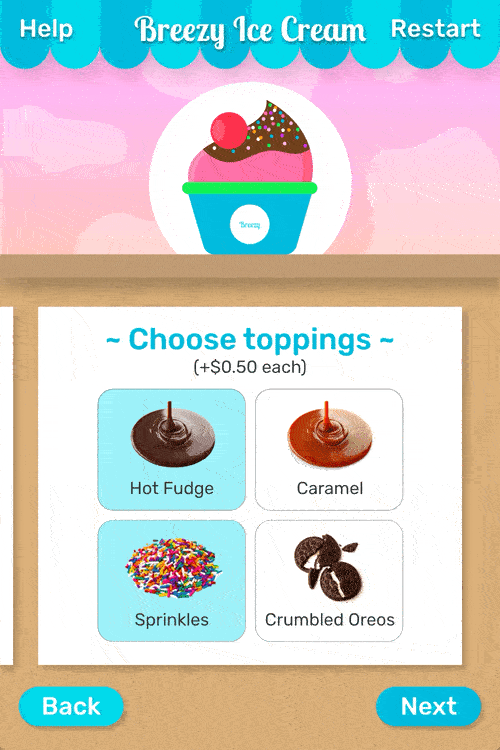
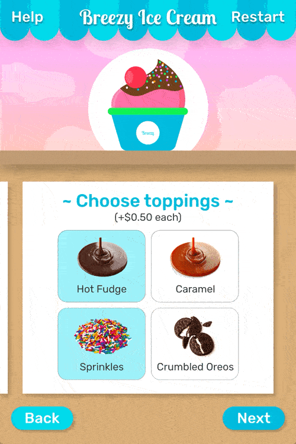

Functions and target audience
The main functions of this interface are to help users customize their ice cream order, direct users to make their payment, and provide user help. The design should also complement the playful experience of ordering ice cream from a vending machine.
I defined the target groups of the product to be children, teenagers, and parents. I also listed out the general demographics and psychographics of the audience to get a better understanding of their needs, but if I had more time on this project, I would have liked to spend more time on user research.
Demographics
- Gender: all genders
- Age: 3-30
- Education: primary/secondary school
- Location: indoor recreational areas (ex. malls, arcades, playplaces, recreational centers), suburban
Psychographics
- Personality: energetic, social, curious
- Values: open-minded, value spending time with family and friends
- Lifestyles:
- Children: have free time on weekends
- Teens: work part-time jobs
- Parents: work a 9-5 job and have family time on weekends
User flows
I created a user flow that goes through the three functions of the ordering process, which includes a get started screen, customization screens, and payment screens. After producing wireframes for these screens, I also created a wireflow for the process.
Wireframes
In my wireframes, I made a few design decisions to cater the interface to vending machines and draw in potential customers' attention. I made buttons and text size big to improve accessibility and usability. I also decided to show a graphic of an ice cream cup gradually getting filled with ice cream and toppings as the user goes through the customization process.
Visual design
To suit the young target audience, I wanted to implement playful and vibrant graphics into the interface design. I created a moodboard with imagery and graphics that I liked, and chose fonts and a color palette based on the moodboard.
First iteration
Prior to designing every screen, I designed three key screens to base the rest on: the start screen, the flavor customization screen, and the payment screen, using graphics and styles from the moodboard.
Microinteractions
I included many microinteractions and other animations to make the user experience more playful. These included animating the start screen, transitions between screens, and the ice cream graphic. These are a few of my favorite microinteractions.


Reflection and improvements
I was pretty happy with what I was able to produce through this short term project. I learned a lot about animating using Adobe XD and practiced designing for a unique UI experience. An improvement I would like to make to this project is doing user research and user testing to get a better understanding of my target audience. Some specific things I would also like to incorporate are allowing users to purchase multiple cups of ice cream at once and implementing a more comprehensive payment system.